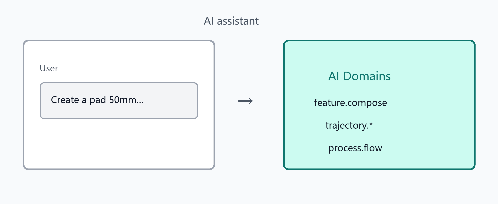

右侧 AI 助手 Dock：选择领域后进行对话。解析链路一般为规则 → 本地模型（如 Ollama）→ 远程 LLM（取决于配置）。
| 领域 | 用途 |
|---|---|
| mesh.create / mesh.compose | 基础实体创建与组合 |
| feature.compose | 参数化特征链，同步到几何建模特征树 |
| trajectory.feature | 轨迹特征识别与离散确认 |
| process.flow | 自然语言描述生成/驱动工艺仿真摘要 |
| pointnet.* | 点云分类与分割 |
| document.import | 与文档导入相关的辅助（若已配置） |
ai_config.json（可由默认模板生成）。尺寸不明时助手可能先追问再生成。